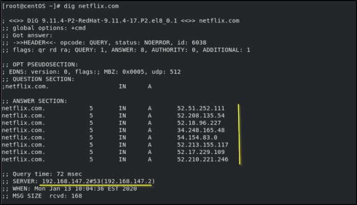

dig command
host that has answered is
192.168.147.2 while in the ANSWER SECTION we can see the resoleved hostnames(netflix.com)
dig is preferred over host command because is a lot more informative.
Sometime
dig like
getent can have different results compared to
host command because they follow the order of query written in the /etc/
nsswitch.conf file and so check first the applicable
files(in our case /etc/hosts).
With the
+trace optiton to dig we will see a non cached version of the result
With the
@ syntax(example: @1.1.1.1)we can look up the domain from a particular server. If the DNS server is authoritative for that domain, the response will not be a cached result.
example:
dig @ns1.google.com google.com
and we can find the authoritative servers by asking for the NS records for a domain: